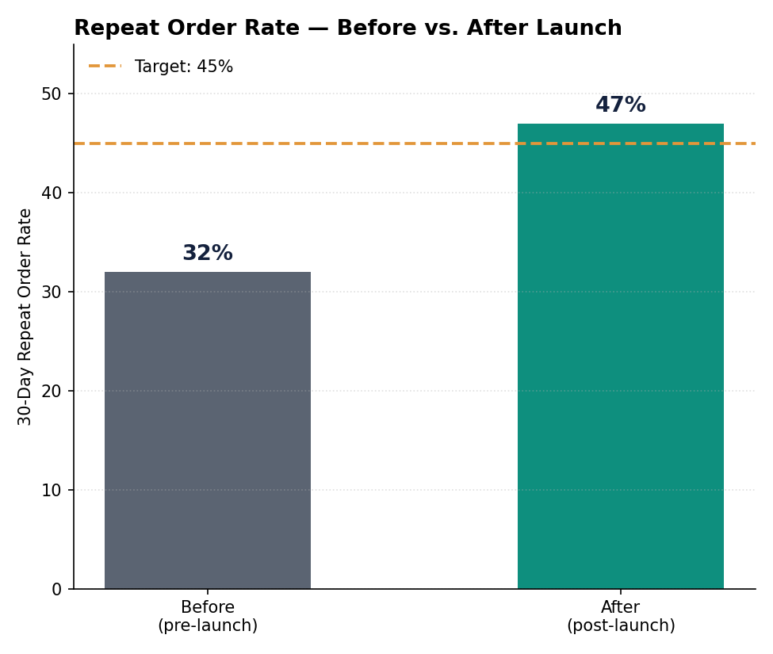
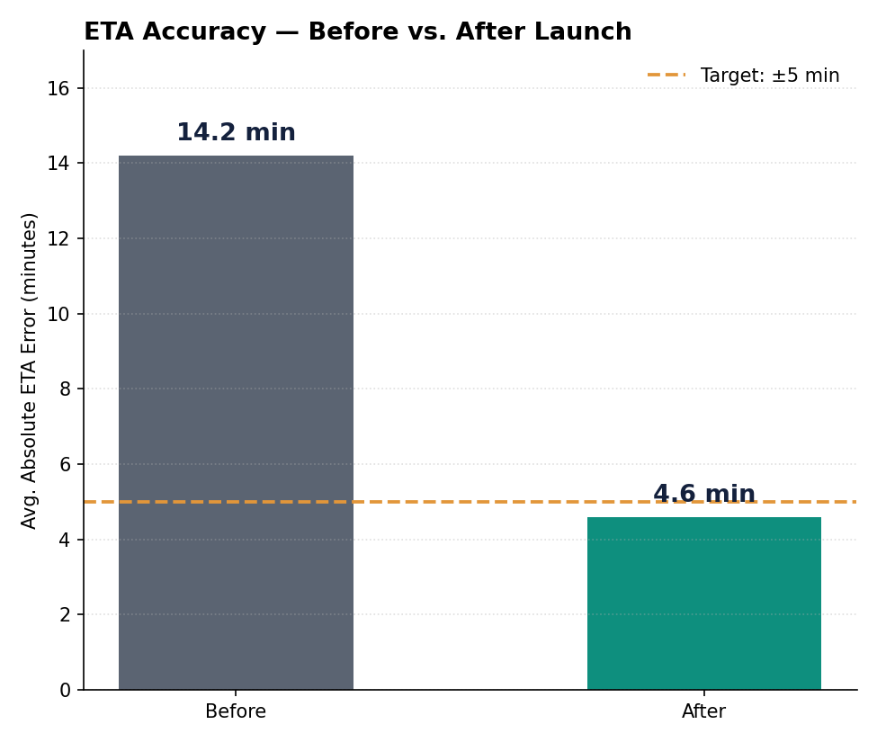
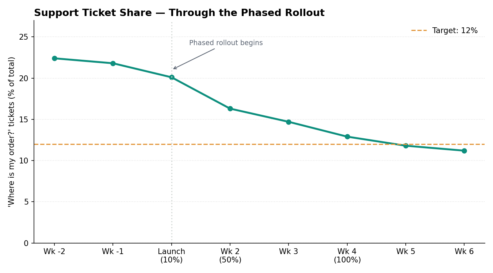

Results against the targets the PRD committed to. The cards below are drawn from data/measurement-metrics.json.
Loading measured results...
Charts



The SQL behind it
Queries from analytics/analysis.sql.
-- ============================================================================
-- QuickBite Analytics — Reorder & Live ETA Confidence
-- ============================================================================
-- Queries used across two phases of this case study:
-- 1. DISCOVERY — the funnel/cohort queries that surfaced the problem
-- (see user-research.md, Finding #3 and the checkout drop-off context)
-- 2. MEASUREMENT — the before/after queries used to validate the shipped
-- solution against the PRD's success metrics (see product-requirements-
-- document.md, Section 7)
--
-- Assumed schema (simplified for this case study):
-- orders(order_id, user_id, restaurant_id, placed_at, status,
-- shown_eta_minutes, actual_delivery_minutes, is_reorder)
-- users(user_id, first_order_at)
-- support_tickets(ticket_id, user_id, order_id, category, created_at)
-- ============================================================================
-- ----------------------------------------------------------------------------
-- 1. DISCOVERY — 30-day repeat order rate (the core problem metric)
-- ----------------------------------------------------------------------------
-- Of users who placed a first order in a given month, what share placed a
-- second order within 30 days? This is the query that surfaced the 68%
-- one-and-done figure cited in user-research.md.
WITH first_orders AS (
SELECT
user_id,
MIN(placed_at) AS first_order_at
FROM orders
WHERE status = 'completed'
GROUP BY user_id
),
repeat_check AS (
SELECT
f.user_id,
f.first_order_at,
EXISTS (
SELECT 1
FROM orders o
WHERE o.user_id = f.user_id
AND o.status = 'completed'
AND o.placed_at > f.first_order_at
AND o.placed_at <= f.first_order_at + INTERVAL '30 days'
) AS reordered_within_30_days
FROM first_orders f
)
SELECT
DATE_TRUNC('month', first_order_at) AS cohort_month,
COUNT(*) AS first_time_customers,
SUM(CASE WHEN reordered_within_30_days THEN 1 ELSE 0 END) AS repeat_customers,
ROUND(
100.0 * SUM(CASE WHEN reordered_within_30_days THEN 1 ELSE 0 END) / COUNT(*),
1
) AS repeat_rate_pct
FROM repeat_check
GROUP BY DATE_TRUNC('month', first_order_at)
ORDER BY cohort_month;
-- ----------------------------------------------------------------------------
-- 2. DISCOVERY — "Where is my order?" tickets as % of total support volume
-- ----------------------------------------------------------------------------
-- Confirms the 22% figure cited in user-research.md.
SELECT
DATE_TRUNC('month', created_at) AS month,
COUNT(*) FILTER (WHERE category = 'delivery_status_inquiry') AS eta_tickets,
COUNT(*) AS total_tickets,
ROUND(
100.0 * COUNT(*) FILTER (WHERE category = 'delivery_status_inquiry') / COUNT(*),
1
) AS eta_ticket_share_pct
FROM support_tickets
GROUP BY DATE_TRUNC('month', created_at)
ORDER BY month;
-- ----------------------------------------------------------------------------
-- 3. DISCOVERY — ETA accuracy distribution (shown vs. actual)
-- ----------------------------------------------------------------------------
-- Buckets the gap between the ETA shown at checkout and actual delivery time,
-- to quantify how far off the static estimate typically runs.
SELECT
CASE
WHEN actual_delivery_minutes - shown_eta_minutes <= 0 THEN 'On time or early'
WHEN actual_delivery_minutes - shown_eta_minutes <= 5 THEN '1-5 min late'
WHEN actual_delivery_minutes - shown_eta_minutes <= 15 THEN '6-15 min late'
ELSE '15+ min late'
END AS delay_bucket,
COUNT(*) AS order_count,
ROUND(100.0 * COUNT(*) / SUM(COUNT(*)) OVER (), 1) AS pct_of_orders
FROM orders
WHERE status = 'completed'
GROUP BY 1
ORDER BY MIN(actual_delivery_minutes - shown_eta_minutes);
-- ----------------------------------------------------------------------------
-- 4. MEASUREMENT — Before/after repeat rate around the Live ETA + Reorder launch
-- ----------------------------------------------------------------------------
-- Compares the 30-day repeat rate for cohorts before vs. after the phased
-- rollout described in product-requirements-document.md, Section 8.
-- :launch_date is the Week 1 rollout start (10% Berlin traffic).
WITH first_orders AS (
SELECT user_id, MIN(placed_at) AS first_order_at
FROM orders
WHERE status = 'completed'
GROUP BY user_id
),
repeat_check AS (
SELECT
f.user_id,
f.first_order_at,
CASE WHEN f.first_order_at < :launch_date THEN 'before' ELSE 'after' END AS period,
EXISTS (
SELECT 1 FROM orders o
WHERE o.user_id = f.user_id
AND o.status = 'completed'
AND o.placed_at > f.first_order_at
AND o.placed_at <= f.first_order_at + INTERVAL '30 days'
) AS reordered_within_30_days
FROM first_orders f
)
SELECT
period,
COUNT(*) AS first_time_customers,
ROUND(100.0 * SUM(CASE WHEN reordered_within_30_days THEN 1 ELSE 0 END) / COUNT(*), 1) AS repeat_rate_pct
FROM repeat_check
GROUP BY period
ORDER BY period DESC;
-- ----------------------------------------------------------------------------
-- 5. MEASUREMENT — ETA accuracy, before vs. after live tracking
-- ----------------------------------------------------------------------------
-- Validates the ±5 minute target set in the PRD's success metrics.
SELECT
CASE WHEN placed_at < :launch_date THEN 'before' ELSE 'after' END AS period,
ROUND(AVG(ABS(actual_delivery_minutes - shown_eta_minutes)), 1) AS avg_abs_eta_error_minutes,
ROUND(
PERCENTILE_CONT(0.9) WITHIN GROUP (ORDER BY ABS(actual_delivery_minutes - shown_eta_minutes)),
1
) AS p90_abs_eta_error_minutes
FROM orders
WHERE status = 'completed'
GROUP BY 1
ORDER BY 1 DESC;
-- ----------------------------------------------------------------------------
-- 6. MEASUREMENT — Reorder feature adoption and its effect on repeat rate
-- ----------------------------------------------------------------------------
-- Isolates whether users who actually used the new one-tap reorder path
-- show a higher repeat rate than those who didn't, within the post-launch
-- cohort — a check against the feature working as intended, not just
-- correlating with the rollout date.
WITH post_launch_first_orders AS (
SELECT user_id, MIN(placed_at) AS first_order_at
FROM orders
WHERE status = 'completed' AND placed_at >= :launch_date
GROUP BY user_id
),
reorder_usage AS (
SELECT
p.user_id,
EXISTS (
SELECT 1 FROM orders o
WHERE o.user_id = p.user_id AND o.is_reorder = TRUE
) AS used_reorder_feature,
EXISTS (
SELECT 1 FROM orders o
WHERE o.user_id = p.user_id
AND o.status = 'completed'
AND o.placed_at > p.first_order_at
AND o.placed_at <= p.first_order_at + INTERVAL '30 days'
) AS reordered_within_30_days
FROM post_launch_first_orders p
)
SELECT
used_reorder_feature,
COUNT(*) AS customers,
ROUND(100.0 * SUM(CASE WHEN reordered_within_30_days THEN 1 ELSE 0 END) / COUNT(*), 1) AS repeat_rate_pct
FROM reorder_usage
GROUP BY used_reorder_feature;
-- ----------------------------------------------------------------------------
-- 7. MEASUREMENT — Support ticket volume trend post-launch
-- ----------------------------------------------------------------------------
-- Tracks the "Where is my order?" ticket share weekly through the phased
-- rollout, to catch a regression early rather than waiting for a monthly view.
SELECT
DATE_TRUNC('week', created_at) AS week,
COUNT(*) FILTER (WHERE category = 'delivery_status_inquiry') AS eta_tickets,
COUNT(*) AS total_tickets,
ROUND(
100.0 * COUNT(*) FILTER (WHERE category = 'delivery_status_inquiry') / NULLIF(COUNT(*), 0),
1
) AS eta_ticket_share_pct
FROM support_tickets
WHERE created_at >= :launch_date - INTERVAL '4 weeks'
GROUP BY DATE_TRUNC('week', created_at)
ORDER BY week;